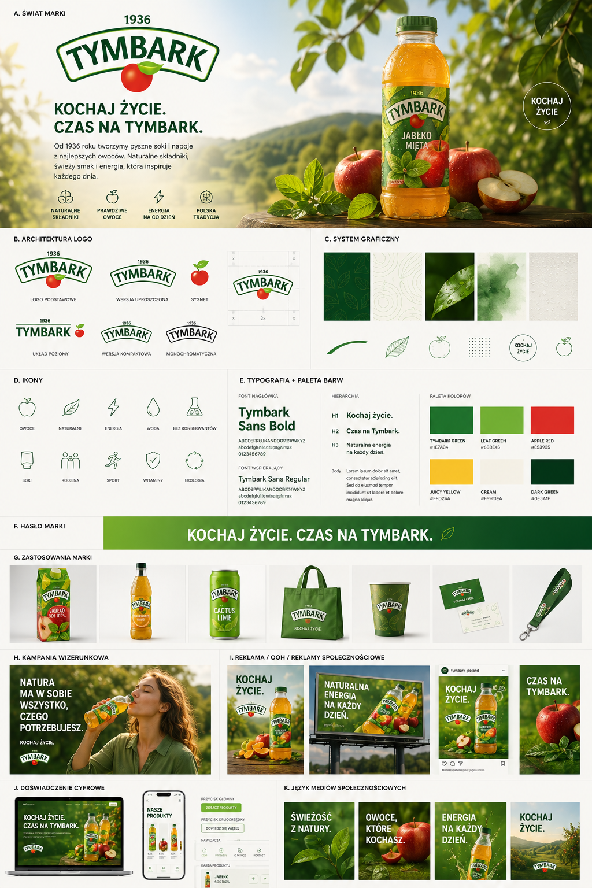

przykładowe wyniki · przykłady wygenerowanych konceptów

tymbarkKompleksowy prompt do generowania systemów identyfikacji wizualnej marki za pomocą AI. Wklej URL strony, wygeneruj gotową planszę brandingową.

tymbarkSkopiuj poniższy prompt, wklej URL strony marki w oznaczone miejsce i wygeneruj swój wynik. Prompt działa najlepiej w ChatGPT. Pamiętaj, by w oknie czatu zaznaczyć opcję tworzenia obrazu!
Użyj przycisku powyżej, aby skopiować cały prompt do schowka jednym kliknięciem.
Wklej prompt do ChatGPT lub innego modelu AI. Zamień [ADRES STRONY WWW] na URL wybranej marki. Pamiętaj o wybraniu opcji tworzenia obrazu!
AI automatycznie przeanalizuje markę i stworzy kompletną planszę brandingową.